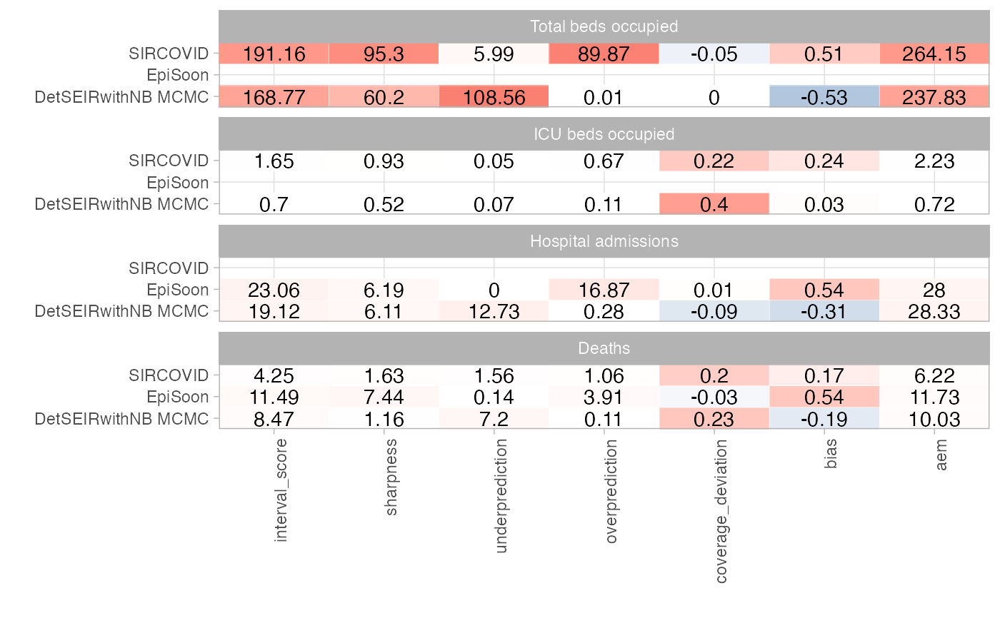
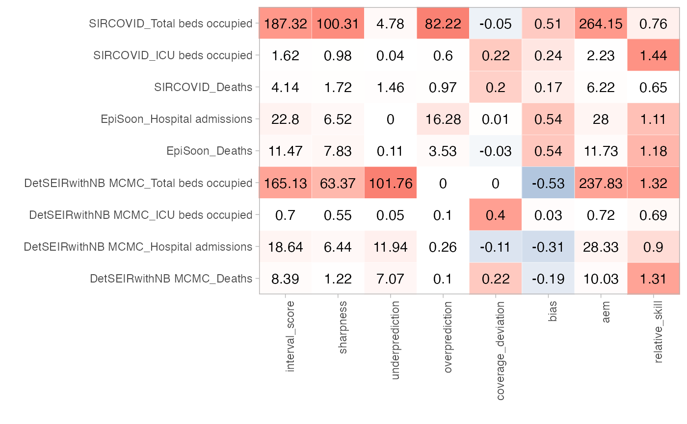
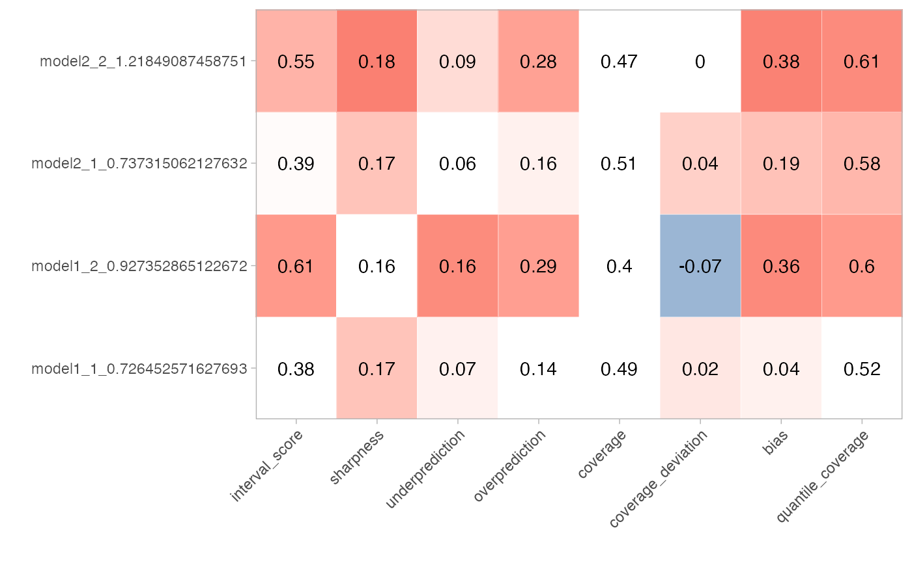
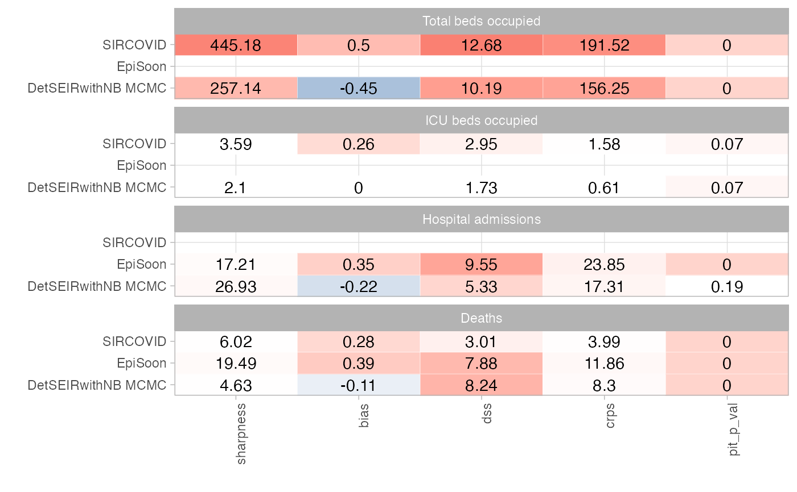
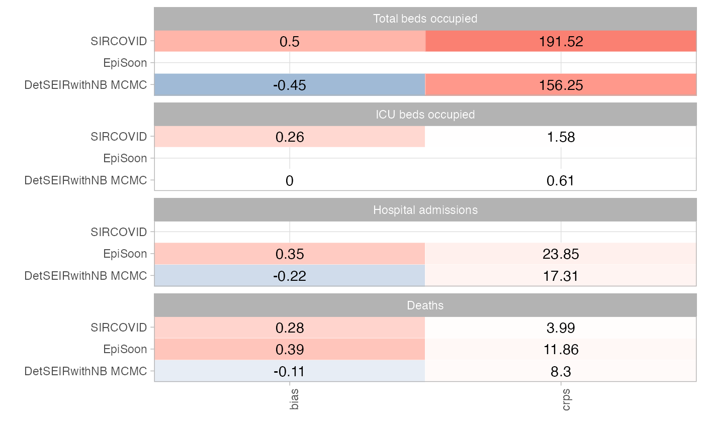

Plots a coloured table of summarised scores obtained using
eval_forecasts
score_table( summarised_scores, y = NULL, select_metrics = NULL, facet_formula = NULL, ncol = NULL, facet_wrap_or_grid = "facet_wrap" )
| summarised_scores | A data.frame of summarised scores as produced by
|
|---|---|
| y | the variable to be shown on the y-axis. If |
| select_metrics | A character vector with the metrics to show. If set to
|
| facet_formula | formula for facetting in ggplot. If this is |
| ncol | Number of columns for facet wrap. Only relevant if
|
| facet_wrap_or_grid | Use ggplot2's |
A ggplot2 object with a coloured table of summarised scores
scores <- scoringutils::eval_forecasts(scoringutils::quantile_example_data, summarise_by = c("model", "value_desc")) scoringutils::score_table(scores, y = "model", facet_formula = ~ value_desc, ncol = 1)# can also put target description on the y-axis scoringutils::score_table(scores, y = c("model", "value_desc"))# yields the same result in this case scoringutils::score_table(scores)scores <- scoringutils::eval_forecasts(scoringutils::integer_example_data, summarise_by = c("model", "value_desc")) scoringutils::score_table(scores, y = "model", facet_formula = ~ value_desc, ncol = 1)# only show selected metrics scoringutils::score_table(scores, y = "model", facet_formula = ~ value_desc, ncol = 1, select_metrics = c("crps", "bias"))